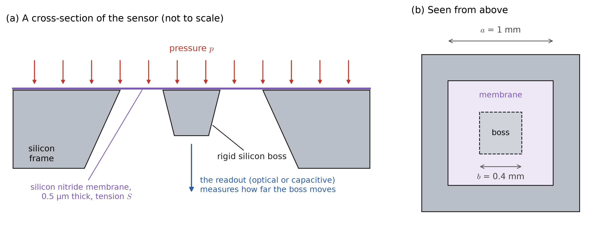
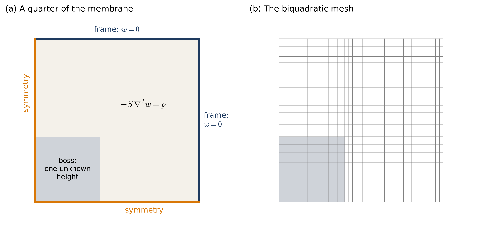
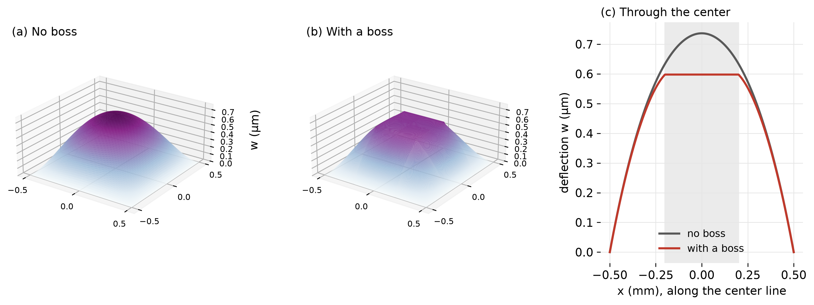
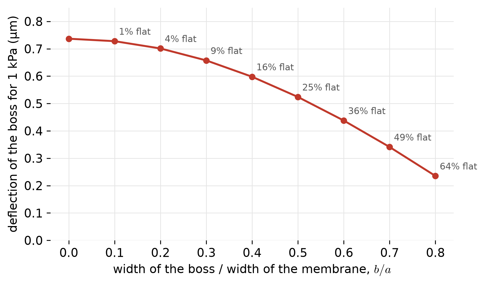
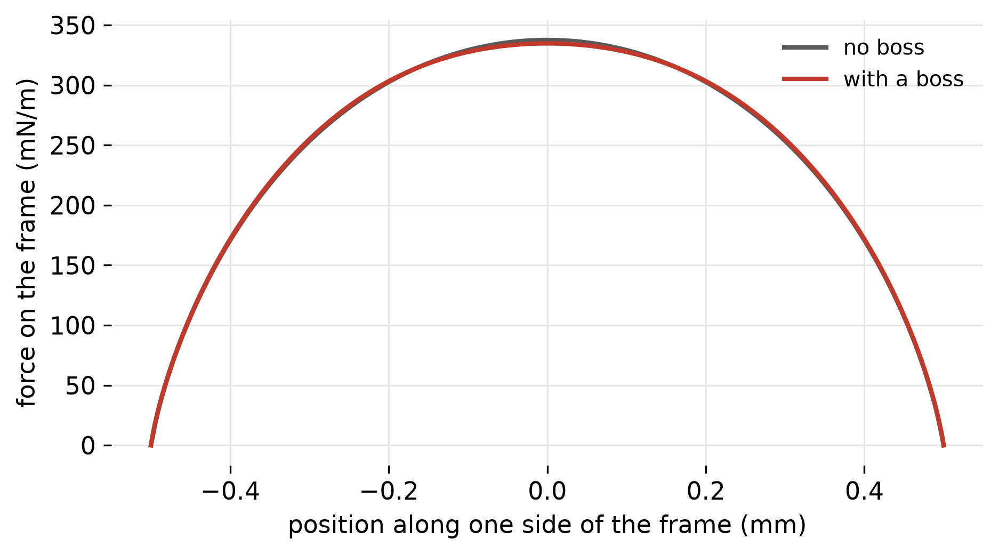

Deflection of a Pressurized Membrane
This page is one of the application pages for Class 24. It applies the scalar boundary value problem of this course to a membrane: a sheet so thin that it carries load only by being stretched, without any resistance to bending. Drumheads, soap films, fabric roofs, and the thin films in many pressure sensors and microphones behave in this way. The example is the diaphragm of a pressure sensor, and the page ends by explaining how the membrane problem relates to the torsion problem of the torsion page.
The physical problem

The sensor in Figure 1 measures pressure by measuring how far the membrane moves. The silicon nitride film is deposited under a large tensile stress, about 200 MPa, and is only 0.5 μm thick. It therefore behaves as a membrane: the built-in tension dominates, and its resistance to bending is negligible, as checked later on this page.
Many sensors read the position of the membrane optically, by reflecting light from it, or electrically, by measuring the capacitance between it and an electrode. Both readouts work best when the part being read is flat. A plain membrane bulges into a dome, while a rigid boss at its center moves up and down as a flat piston. The questions are how far the boss moves for a given pressure (the sensitivity of the sensor), how that depends on the size of the boss, and how much force the membrane applies to the frame.
The quantities and their units
| quantity | symbol | units | value here | role in the boundary value problem |
|---|---|---|---|---|
| deflection | \(w\) | m | less than 1 μm | the unknown \(u\) |
| tension (force per unit length) | \(S = \sigma_0\,t\) | N/m | 100 | the coefficient \(\kappa\) |
| residual stress in the film | \(\sigma_0\) | Pa | 200 MPa | |
| thickness of the film | \(t\) | m | 0.5 μm | |
| pressure | \(p\) | Pa | 1000 | the source \(f\) |
| vertical force per unit length | \(-S\,\nabla w\cdot\underline{n}\) | N/m | the flux \(-\kappa\nabla u\cdot\underline{n}\) | |
| side of the membrane, side of the boss | \(a\), \(b\) | m | 1 mm, 0.4 mm |
The governing equation
Consider a small rectangle of the membrane, \(\Delta x\) by \(\Delta y\). On each of its edges the tension \(S\) pulls along the membrane, which is tilted by its slope. On the edge at \(x + \Delta x\), the upward component of this pull is \(S\,\Delta y\) times the slope \(\partial w/\partial x\) there, and on the edge at \(x\) it is \(-S\,\Delta y\,\partial w/\partial x\). If the slopes are small, the net upward force from these two edges is
\[ S\,\Delta y\left[\frac{\partial w}{\partial x}(x + \Delta x) - \frac{\partial w}{\partial x}(x)\right] \approx S\,\frac{\partial^2 w}{\partial x^2}\,\Delta x\,\Delta y , \]
and similarly for the other two edges. The pressure pushes on the rectangle with a force \(p\,\Delta x\,\Delta y\). Setting the total vertical force to zero and dividing by the area gives
\[ -S\,\nabla^2 w = p \qquad\Longleftrightarrow\qquad -S\,w_{,ii} = p , \]
where \(S\) is constant. Since a constant can be moved inside the derivatives, this is the Poisson Equation, \(-\left(\kappa\,u_{,i}\right)_{,i} = f\), with \(u = w\), \(\underline{\underline{\kappa}} = S\), and \(f = p\). Two assumptions are built in: the slopes are small, and the tension is uniform and is not changed by the deflection. A uniform tension is also what the membrane needs to be in equilibrium in its own plane, when nothing else pulls on it in that plane. If the tension differs in two directions, \(\underline{\underline{\kappa}} = \mathrm{diag}(S_x, S_y)\), and if the pressure varies from point to point, \(f = p(x,y)\).
The flux has a direct meaning here: \(-S\,\nabla w\cdot\underline{n}\) is the vertical force per unit length that the membrane on one side of a line exerts on the membrane on the other side. At a supporting edge, it is the force that the membrane applies to the support.
Boundary conditions

The membrane is symmetric about both axes, so a quarter is modeled, as shown in Figure 2.
- The frame holds the membrane at \(w = 0\), a Dirichlet condition.
- The two axes are planes of symmetry, with zero slope across them, a Neumann condition with zero data.
- The boss is rigid, so every point of it moves by the same amount \(w_b\). This value is not known in advance: it is whatever height makes the boss balance, with the pressure on the boss pushing it down and the membrane around its edge pulling it back.
The boss is the new feature of this example. In the mesh, all of the nodes in the boss are given one shared unknown. In the assembled equations, the rows of all these nodes are added together into a single row, and the columns likewise. This can be performed, for instance, by having the ID array for each node of the boss map map each node index of the boss to the same global unknown and then assembling in the typical manner. The single resulting equation states that the total pressure force on the boss equals the total vertical force that the membrane applies around its edge, which is exactly the equilibrium of the boss. No separate condition has to be written: it follows from the weak form, in the same way that a Neumann condition does.
The solver receives \(\underline{\underline{\kappa}} = S\), \(f = p\), \(g = 0\) on the frame, and the list of nodes in the boss.
Other edge conditions
A membrane can be supported in other ways, which correspond to the other boundary conditions of this course.
- A frame that is not flat, such as a tent between high and low supports, is a Dirichlet condition with a nonzero \(g(x,y)\), the height of the support.
- An edge that is free to slide up and down on a smooth vertical guide receives no vertical force, so \(S\,\nabla w\cdot\underline{n} = 0\), a Neumann condition.
- An edge held by springs of stiffness \(k\) per unit length receives a vertical force proportional to its deflection, \(S\,\nabla w\cdot\underline{n} = -k\,w\), a Robin condition with \(\hat{a} = k\) and \(\hat{c} = 0\).
The solution

Figure 3 shows that, without a boss, the membrane bulges into a smooth dome with its highest deflection at the center. With the boss, the center is flat and lower. The boss is stiffer than the membrane it replaces, and the strip of membrane around it must hold up the pressure on the boss as well as on itself.
Quantities of interest
Sensitivity
The sensitivity of the sensor is the deflection of the part that is read per unit pressure.
| no boss (center) | with the boss | |
|---|---|---|
| deflection for 1 kPa (μm) | 0.737 | 0.598 |
| average deflection over the membrane (μm) | 0.351 | 0.339 |
| total force on the frame (mN) | 1.0000 | 1.0000 |
Table 2 shows that the boss reduces the deflection read by the sensor from 0.737 μm to 0.598 μm, a loss of 19% in sensitivity, in exchange for a flat region covering 16% of the membrane. The average deflection, which controls the capacitance in a capacitive readout, is reduced by only 4%.

Figure 4 shows the trade-off over a range of boss sizes. Small bosses cost almost no sensitivity but provide little flat area; large bosses provide a large flat area but stiffen the membrane considerably. A designer would choose the size of the boss from the area that the readout needs.
Force on the frame

The vertical force per unit length on the frame is \(-S\,\nabla w\cdot\underline{n}\), shown in Figure 5. It is largest at the middle of each side, 338 mN/m, and falls to zero at the corners, where the membrane is held on two sides. The boss hardly changes this distribution, because the total load is the same. The total force on the frame, computed from the reactions at the frame nodes, equals the total pressure force \(p\,a^2\) = 1.0000 mN in both cases, as it must.
Checks
- A problem with a known answer. Without the boss, the deflection at the center of a square membrane has an exact series solution, 0.73671 μm. The finite element values are 0.73728 μm with bilinear elements and 0.73671 μm with biquadratic elements for the mesh provided.
- Balance of forces. The force on the frame equals the total pressure force to within a relative difference of 2 × 10⁻¹³.
- Refinement. The deflection of the boss is 0.5975, 0.5977, and 0.5978 μm on three successive meshes.
- The assumptions of the model. The largest slope is 0.0034, so the small-slope assumption holds easily, except right at the corners of the boss (see below). Stretching the film by this deflection adds a tension of only about \(E\,t\,(w/(a/2))^2 \approx\) 0.27 N/m to the built-in 100 N/m, so the tension is effectively unchanged. The bending stiffness of the film, \(D = E t^3/(12(1-\nu^2))\), is 2.8 × 10⁻⁵ times \(S\,a^2\), so bending is negligible.
The inside corners of the boss are re-entrant corners of the membrane, where the slope of the exact solution is infinite, as at the inside corner of the I-beam on the torsion page. The membrane is most highly loaded there, and real bosses have rounded corners for that reason. The sensitivity and the forces above are not affected, since they are values and integrals of \(w\) rather than slopes at a corner.
How the membrane relates to torsion
The membrane and the torsion problem of the torsion page are governed by the same equation:
\[ \text{membrane: } -S\,\nabla^2 w = p, \qquad \text{torsion: } -\nabla^2\Phi = 2 . \]
When the frame is flat and the pressure is uniform, the two solutions are proportional, \(w = \tfrac{p}{2S}\,\Phi\), and one finite element solution answers both. The plain membrane on this page is exactly the torsion of a bar with a square cross-section:
- the volume under the membrane equals \(\tfrac{p}{4S}\,J\); with \(J\) = 0.14058\(\,a^4\) for a square, this gives 3.5144 × 10⁻¹³ m³, and the finite element volume is 3.5144 × 10⁻¹³ m³;
- the slope of the membrane corresponds to the shear stress, and its contours to the paths of the stress.
The two problems differ in what the solution means and in what each can describe.
- The meaning of the unknown. The deflection of a membrane is a real displacement. The stress function of torsion is a mathematical device, whose slope gives the stresses and whose integral gives the torque.
- Boundary conditions. A membrane can be held at any height, by a guide, or by springs, as described above. In torsion, the free surface of the bar always gives a constant value of \(\Phi\) along each boundary, and nothing else.
- Loading and materials. A membrane can carry a pressure that varies from point to point, and a different tension in two directions. In a bar of one material, the right side of the torsion equation is always uniform.
- Validity. The membrane equation assumes small slopes and a tension that does not change; for large deflections, the membrane problem becomes nonlinear. The torsion equation has no such limit within linear elasticity.
The boss and the hollow tube
The boss also answers a question left open on the torsion page. A bar with a hole, such as a tube, needs a value of \(\Phi\) on the edge of the hole that is constant but unknown, and it is found from an additional condition. Prandtl showed that the membrane version of a hole is a flat, rigid lid over the hole, pushed by the same pressure and free to move up and down: exactly the boss of this page. The boss calculation is therefore also the torsion of a square tube whose wall surrounds a square hole of side \(b\). Its torsion constant is \(J = \tfrac{4S}{p}\,\times\) (the volume under the membrane and the boss), which gives 0.1356\(\,a^4\), compared with 0.1406\(\,a^4\) for the solid square. Removing the central 16% of the cross-section reduces the torsional stiffness by only 3.5%, because material near the center of a twisted bar carries very little stress.
Limits of the model
- Small slopes and constant tension. Both hold easily here, but a fabric roof or a trampoline deflects far enough that the tension changes with the deflection, and the problem becomes nonlinear.
- No bending. A thicker diaphragm, or one with little built-in tension, also resists bending, and is described by a plate equation with fourth derivatives instead.
- A perfectly rigid boss and a perfectly rigid frame.
- Static pressure. A microphone or a drum responds to changing pressure, which adds the inertia of the membrane and leads to vibration problems.
Summary
- A membrane carries pressure only through its tension, and its deflection satisfies the problem of this course with \(u = w\), \(\underline{\underline{\kappa}} = S\), and \(f = p\).
- The flux is the vertical force per unit length transmitted through the membrane, so the reactions at the frame give the force on the support.
- A rigid region that moves as a whole is modeled by giving all of its nodes one shared unknown; the equilibrium of the region then follows from the weak form.
- A boss trades sensitivity for a flat central region, and the trade-off can be computed for any size of boss.
- With a flat frame and uniform pressure, the membrane is the torsion problem in different units; a boss on a membrane corresponds to a hole in a twisted tube.